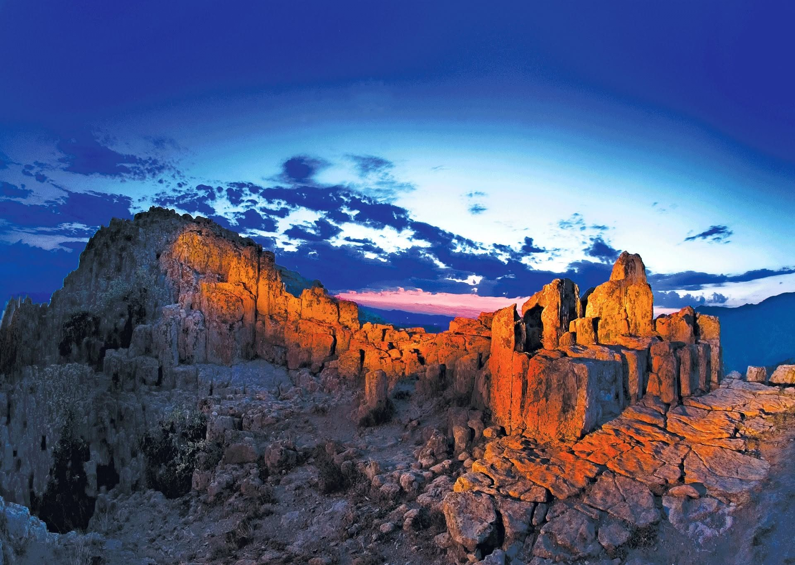

Татиќев Камен · Северна Македонија
Таму каде што бронзеното време
научило да го чита небото
Пред речиси четири илјади години луѓето се качувале на овој вулкански рид за да ги набљудуваат изгревите на сонцето и месечината низ засеци во карпата — и од тоа што го виделе создале календар. Кокино сè уште е тука и сè уште функционира.
Што е Кокино
Опсерваторија всечена во вулкан
Кокино се наоѓа на врвот на Татиќев Камен, неовулкански рид на 1.030 метри надморска височина во општина Старо Нагоричане — околу 30 км од Куманово и приближно два часа од Скопје.
Карпите тука се создадени со стврднување на лавата. Времето и ерозијата ги испукале во процепи и зарамнети површини, а набљудувачите од бронзеното време ги претвориле тие природни форми во инструменти: платформи на кои се стои, тронови на кои се седи и камени маркери што прецизно го определуваат местото каде сонцето и месечината го пробиваат источниот хоризонт во одредени денови од годината.
Бил и планинско светилиште и функционален календар — место за мерење на времето и за благодарност за него.


Бесплатно · Без апликација
Аудио водичот се врати
Оригиналниот аудио водич на Кокино беше апликација што тивко исчезна кога старата страница престана да работи. Снимките преживеаја — па ги вративме на интернет, каде што секој телефон може да ги пушти.
Седум стојалишта, вкупно околу единаесет минути, кои ве водат од подножјето на ридот, преку обредните јами, до платформите Г, А и В. Пуштете го на паркингот и следете го.
- 1Добредојдовте на КокиноКаде се наоѓате1:01
- 2Четирите платформиА, Б, В и Г објаснети2:42
- 3Обредни јами и кружни камени конструкцииШто било закопано тука и зошто2:59
- 4Одете на Платформа ГРамнодениците и ѕвездата Алдебаран1:00
- 5Одете на Платформа АТроновите и обредниот маркер1:19
- 6Одете на Платформа ВДолгоденици, рамнодениции и месечината1:16
- 7Пред да заминетеПоследна мисла0:12
Подлабоко
Четири начини да го разберете ова место
Кокино наградува ако прочитате нешто пред искачувањето. Секој од овие текстови трае околу пет минути.
Локалитетот и маркерите
Како се поврзани четирите платформи и што бил изработен да фати секој од седумте маркери.
ИстражиАстрономија
Лунарниот календар со циклус од 19 години, маркерите за долгоденицата и рамноденицата и како ги следела една праисториска заедница.
ИстражиАрхеологија
Околу 100 обредни јами, кружни камени конструкции, вотивни фигурини и калапи за лиење бронза.
ИстражиОбреди и митови
Големата Богинка Мајка, Сонцето како нејзин син и народите што подоцна ја држеле оваа земја.
ИстражиХронологија
Накратко, четири илјади години
Датумите произлегуваат од ископувањата на Н.У. Музеј — Куманово, кој работи на локалитетот од 2001 година, и од астрономското проучување на самите маркери.

Изработена е северната платформа
Платформа Г е обликувана на северната падина. Во тоа време ѕвездата Алдебаран се наоѓа во точката на рамноденицата, а маркерот на платформата ја фаќа.
Следи западната платформа
Изработена е Платформа В, а со неа и главната низа сончеви и месечеви маркери на источниот хоризонт.
Календарот во употреба
Изгревите на полната месечина се следат низ циклус од 19 години. Најголемиот дел од керамиката и обредните депозити потекнуваат од овој период.
Светилиштето престанува
Употребата како светилиште завршува. На јужната падина се појавува населба од железното време — иако набљудувањето на небото можеби продолжило.
Повторно откривање
Започнуваат систематски ископувања и археоастрономски истражувања, а Кокино влегува во литературата како една од најдобро зачуваните опсерватории од бронзеното време во Европа.
Често ќе прочитате дека НАСА го рангирала Кокино како четврта најстара опсерваторија во светот. Вистината е поскромна, но вистинска: во 2005 година образовниот форум на НАСА „Sun-Earth Connection“ го вклучи Кокино во образовен преглед на древни опсерватории, Ancient Observatories: Timeless Knowledge. Никогаш немало официјално рангирање. На Кокино не му ни треба — маркерите зборуваат сами за себе.
Како да стигнете
Подостапно е отколку што изгледа
Со автомобил
Од Куманово преку Старо Нагоричане и Драгоманце, потоа тесен асфалтен пат до подножјето на ридот. Паркирањето е покрај патот; искачувањето трае околу 15 минути.
Колку време да предвидите
Околу 1,5 до 2 часа на локалитетот, плус искачувањето. Стражарска служба е присутна од 9:00 до 17:00 и може да ве упати кон маркерите.
Тури со водич
Со локалитетот управува Н.У. Музеј — Куманово, кој обезбедува стручни водичи за групи што ќе се најават однапред.

Еднодневен излет од Скопје
Ние ќе ве однесеме
Приближно два часа во секој правец, со до три часа на ридот — и, ако сакате, традиционален македонски ручек во Етно село Тимчевски во селото Војник на враќање.